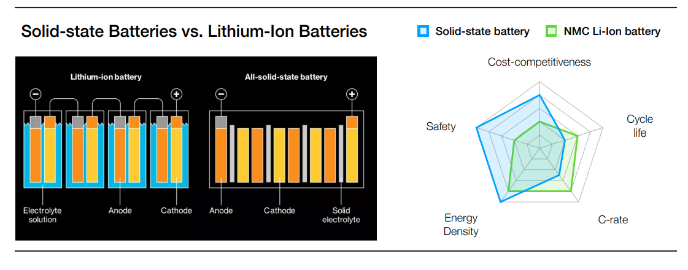

Passenger Vehicles: EVs vs Conventional Cars

Advantages of EVs
EVs are energy efficient and allow for significant physical constraints associated with combustion engine vehicles. An EV has only one moving part, i.e., its motor, while traditional cars have hundreds of them. Fewer moving parts mean that EVs require less periodic maintenance and are more reliable than ICE cars. They don't need oil changes or exhaust system repairs. EVs slow down through a process called regenerative braking - this results in reduced wear and tear on brake pads and rotors while also saving energy. Most importantly, EVs are cheaper in the long run and maintain a robust fuel-to-cost advantage due to the availability of cheap electricity. Also, EVs can provide better aesthetics and drive comfort over conventional vehicles.
Disadvantages of EVs
The limited range offered by most electric models and the lack of proper charging infrastructure creates a sense of ‘range anxiety’ in the minds of prospective buyers, possibly driving them away. However, EV batteries wear out over time, post which the batteries will need to be replaced. They’re heavier and create near-instant torque off the line, causing the tires to be replaced 30% more frequently than traditional internal combustion engine cars.
EVs in Corporate Fleet:
Although EVs have fewer moving parts than combustion engine vehicles, our service network doesn't know much about them. The EV service network of most OEMs is not yet up to a substantial level despite having extensive service and dealer networks across India. Automakers will have to reskill their employees before EVs can be adopted for commercial use because they will constantly need maintenance, servicing, and repair of their vehicles. In the absence of a proper service network, there will be disruptions in the supply chain.
The EV Revolution

The growth of the internet was disruptive, changing the way we almost do anything. And it followed a familiar 'S'-shaped pattern, commonly referred to as the sigmoid curve. At the turn of the last century, the internal combustion engine followed the same trajectory. So did steam engines, video games, and printing presses. And electric vehicles will do the same. Presently, EVs are just 5% of total car sales, but it shows we're already entering the steep part of the S. According to the latest forecast by the investment bank UBS, 20% of all new cars sold globally will be electric by 2025. That will leap to 40% by 2030, and by 2040 virtually every new vehicle sold globally will be electric. Researchers say that we have already crossed the tipping point, and the industry is on a path of exponential growth; reasonably, after looking at the sales figures, we couldn’t presume otherwise.
Global EV Market and Sales
Despite the COVID-19 pandemic and overall passenger car sales decline, EV car registrations increased in major markets in 2020. Governments worldwide spent $14 billion on direct purchase incentives and tax deductions for electric cars in 2020, a 25% rise year on year. Notably, Europe overtook China as the biggest EV market due to increased value for money, rising environmental concerns, and government-supported incentive schemes.
The upward trajectory followed in 2021, with overall sales doubling compared to the previous year, with over 6.6 million units sold in the past year. This could be attributed to the increased driving range of new electric vehicles, with the mean range being about 360 km, compared to 200 km in 2015. Moreover, buying trends revealed that demand is shifting towards premium and higher capacity vehicles. The most significant growth is and could continue to be in luxury vehicles and SUVs among all categories of passenger vehicles. In 2021, the majority of the OEMs updated their product portfolios to include electrified SUVs, causing a surge in product sales.
By region
China has regained the top position, with a growth of 154% YoY and about 3.3 million units in sales. Due to their ultra-affordable prices, mini-EVs drove the sales in China, amounting to a quarter of the total sales during the first half of 2021, causing the Chinese automaker BYD to outpace Tesla in overall market share.

The US EV market witnessed a growth of over 83% in 2021. Industry data reveals that the EV market in Europe has considerably increased over the last few years, with annual sales crossing the 2 million mark in 2021.
By company
Tesla led the global EV sales with a market share of 14.55% in the first half of 2021, with sales amounting to 421,000 units. Volkswagen followed this with 12.52%, General Motors (including SAIC-GM-Wuling) with 12.2%, and Stellantis with 6.45%. Due to their ultra-affordable prices, Mini-EVs drove the sales in China, amounting to a quarter of the total sales during H1 2021 - causing a two-fold increase in the Chinese giant BYD’s sales. Significantly, some OEMs plan to reconfigure their product lines to produce only electric vehicles, with targets set for 2030 and beyond in most cases. And it’s not just the premium brands.
- Ford will sell only electric cars in Europe from 2030.
- GM is investing $27 billion in electric and autonomous vehicles
over the next five years, up from the $20 billion planned before the
onset of the COVID-19 pandemic. Also, it intends to be carbon
neutral by 2040 in its global products and operations.
- Volkswagen aims for 70% electric car sales in Europe and 50% in
China and the United States by 2030. It has earmarked around €16
billion for investment in the future trends of e-mobility,
hybridisation, and digitalisation up to 2025.

- Toyota has dedicated over $70 billion to support its
electrification plans, half of which will go to fully electric
models. The company aims to sell 3.5 million EVs by the end of the
decade, almost double its target in early 2021.
- The Renault-Nissan-Mitsubishi alliance plans to secure 220 GWh of
battery production by 2030 and reduce battery costs by 65% by
2028.
- Stellantis aims for 70% of electric cars sales in Europe and 35%
in the United States.
- South Korean carmaker Hyundai has reportedly decided to halt IC
engine research and development at its Namyang R&D Centre to support
its plans.
- Volvo (including Geely) plans to go fully electric by 2030.
The world’s most valuable automaker, Tesla, forecast its deliveries to grow by 50% YoY. The company is working to achieve full self-driving by the end of 2022. The company’s upcoming AI supercomputer, DOJO, will continuously train and improve its full self-driving software on its own.
Brand Stories
The Tesla Story:Since going public in July 2010, Tesla has been on top of alternative powertrains in the passenger vehicle industry. Valued at $925 billion, three times that of Toyota, its research and development expenses reflect the brand's commitment to innovation. While the United States continues to be Tesla's most important target market, the company aims to tap into the Chinese and European markets, as well. With a growth rate of over 157 per cent in 2021, Tesla is one of the fastest-growing brands worldwide. Most of its models are electric passenger cars, particularly sedans and crossover vehicles, but plans to release its first electric light-duty truck in 2023 are underway. Direct sales, home services, and the supercharger network make Tesla cars the customers’ choice.
is Volkswagen ID.4 gaining momentum in sales? The ID.4, launched as a rival to Tesla’s Model Y, has a very appealing design and is a first in many aspects. First of all, it boasts of a battery that has a claimed per-charge range of 520 km. The car has a 210 mm ground clearance, and VW is betting big on its off-road capabilities. Initial reviewers reported that the vehicle offered a marginally better ride quality and comfort than the Model Y. Most importantly, ID.4 is $20,000 cheaper than Model Y. Amid shifts in nsumer preference, VW continues to change its lineup towards electric vehicles especially eSUVs.
SAIC: SAIC is one of the largest manufacturers of micro-vans in China and has a joint venture with US’s General Motors, called SAIC-GM-Wuling. Known as xiao mianbao che, or “small bread-box cars”, these pint-size commercial vehicles are no larger than a compact car and have sold well even with the poorer interior. One of its popular micro-vans is the Wuling Sunshine. Selling more than 450,000 units per year, SGMW has claimed no one model outsells it in China.
Solving the EV Charging Dilemma
Consumers who consider buying their first EV have many anxieties - wondering if they might get stuck on the highway if there are not enough charging points. While many EV drivers use privately-funded chargers at home or work, about half of the charging will come from chargers on the road and at destinations, depending on the region. So, without a public charging infrastructure, the adoption of electric vehicles will continue slowly.

The government must work with players across the EV ecosystem to create a ramp-up master plan, including location, time, type, and the number of charging points. They should communicate the plan's goals to all stakeholders as clearly as possible. And the creation of key players should be encouraged until the private sector is ready to intervene. They were less profitable but necessary, especially along highways or in sparsely populated areas. Only then can the dilemma of creating conditions for private investment and creating a self-sufficient market structure that is economically viable without subsidies be resolved.
Many consumers are hesitant to buy an electric vehicle until they know they can charge it when and where they want it. A global survey of licensed drivers found that 46% of respondents said they would only buy an electric vehicle if charging stations were as common as gas stations. Most charging points are slow devices installed where the owner is away from the car for a long time - for example, homes, offices, shopping malls, and commercial buildings. But checkpoints along highways, short-term parking lots, and checkpoints in rural areas where drivers can stop en-route to recharge their cars should be faster.
The government's response to this problem has been by launching public funding markets for charging infrastructure. But in general, they did it without any plans to expand the market, and it was left to the open market to decide. The results of these initial efforts were often confusing. For example, in the early days of the Berlin program (2010-2015), the government provided various subsidies to develop charging infrastructure. Still, the existing EV charging stations were not fully utilised because appropriate regulations or requirements were not set. It is not commercially viable.
In the United States, competing standards have prevented many CPs from servicing more than one type of vehicle. As a result, the driver arrives at the checkpoint they find on the map but finds it unavailable, a situation that undermines confidence in the EV charging process. Governments must develop a national master plan for EV charging infrastructure and economics that supports the EV ecosystem, has the proper framework for public-private partnerships and ensures that the private sector is an attractive sector worthy of participation. All CP locations should be pre-mapped, considering the mix, distribution, and use of different types of sites where people can charge their vehicles. For example, a government may place a fast charger every 50 miles on a highway and a charger in each zone of a specific size, such as every 50 square miles. It is also essential for the government to provide comprehensive and convenient charging access for low- and middle-income users who cannot easily upgrade their homes to charge their electric vehicles.
A governance body should be established so that the first stakeholders (municipalities and government agencies such as the Ministry of Energy, Transportation, Technology, and Environment) and other ecosystem participants can coordinate and agree on how to proceed. This governing body must define an EV charging ecosystem that will ultimately include a variety of players such as OEMs, utilities, charging professionals (providing access cards, apps, payments, and user experiences), investors, entrepreneurs, and NGOs. Many of these participants need a business case, including grants, incentives, and other government-backed guarantees to move forward. Others are relevant at a basic level. For example, governments should engage grid operators to facilitate the connectivity of electric vehicle charging infrastructure by choosing less constrained grid locations. For instance, in the Netherlands in 2009, six grid operators established the Elaad foundation to install electric vehicle charging infrastructure in cooperation with municipalities. Now, let’s dive into the leadership stories of two European nations, Norway and the Netherlands.
How did the Netherlands achieve its EV dream?
In the Netherlands, around three in every five of the 400,000 new cars sold annually are PHEVs. One of the main reasons that can be attributed to it is the network of some 75,000 charging stations – which accounts for nearly a third of the entire EU total. Besides that, the Dutch have their own charging points at home, accounting for almost 190,000. In towns, every electric car user has the right to access charging stations within 200 meters of their home, and in the countryside, motorists have their own posts. Around 75% of the generating electricity is rendered by solar power.

Also, the government incentivises the ownership process to promote EV growth in the country. The owner can claim up to €4,000 on buying a new car. Now let's move on to the question, "How easy is it to claim in the Netherlands?" The answer is straightforward. Roaming protocols adopted more than a decade ago allow multiple operators in the market to take advantage of roaming opportunities. This way, drivers can top up anywhere with one card or app instead of the various cards required in different countries.
Second, the deployment of slow charging has traditionally started in supermarkets, parking lots, or shopping malls. But over time, municipalities began to intervene, adding to the network when electric vehicle drivers requested a charging station near their address to charge on the road. This is an essential benefit for apartment occupants who are reluctant to purchase electric vehicles because there is no place to charge them. Many operators are on the market, such as MisterGreen, Shell, FastNed, or Allego.
In general, the Netherlands shows that financial incentives can be decisive for adopting electric vehicles. Still, despite the lack of many stimuli at present, the number of available charging stations and having no worries about charging creates a positive impact. This allows the Netherlands to remain a leader in electric vehicle adoption despite lower incentives.
Cost Comparability of EVs in Norway
EVs made up almost two-thirds of Norway’s overall sales in 2021, making it the country with the highest proportion of electric vehicles among all other nations. Industry representatives expect sales to grow to as much as 80% of the overall market in 2022. The country is the only one in the world in the third stage of a disruptive trend, and further growth of EVs in the country is inevitable.

This high uptake is a testament to the progressive electric vehicle policies implemented by the government over the past several years. The acceleration was mainly caused by the vehicles becoming cheaper as Norway exempted fully electric cars from taxes imposed on those relying on fossil fuels - owners benefited from waivers on purchase/import taxes, annual road tax, and exemption from 25% VAT. EV owners needed to pay only half of the fee levied for using ferries and municipal parking. Conversely, it raised taxes on traditional combustion engine cars, including high incompliance fees incorporating carbon tax, NOX tax, and scrapping fees. Also, because Norway is a small country, people don't need to drive long distances in most cases. On top of these, the Norwegian Parliament recently declared its new zero-emission target, requiring all new cars sold by 2025 to be electric (or hydrogen).
Also, renewable electricity is key to successfully decarbonising transport systems. Norway, being a pioneer in offshore wind systems and hydropower, couldn't have achieved this in any better way. All of this combined has caught the attention of many multinational corporations, which has resulted in Norway being at the forefront of EV technology development. Companies are also planning to start battery swapping stations in the country.
Batteries in Electric Vehicles
Solid-State Battery: The future of battery technology A solid-state battery uses solid electrolytes, unlike liquid solutions used in Li-ion batteries. Lithium-ion batteries risk getting damaged under external force or high amounts of stress, while solid-state batteries have improved stability as they maintain form even after getting damaged. Although solid-state batteries for usage in electric vehicles are still in the early stages of development, the initial results are promising. The solid-state battery market will expand at a CAGR of over 30%, growing over 13 times from 2021 to 2031.

Enhancing Battery Performance Using Nanotechnology
The main problems EVs face are due to their batteries, as they are
very costly and have a short charging life. We have to overcome this
difficulty, adopting some applications of nanotechnology, which has
produced some great results in the past few years.
For Lithium-ion batteries, the Lithium is inserted into the cathode. During cell charging, the cathode material releases Li-ions to the electrolyte. Electrons are removed from the cathode by an external field and transferred to the anode. The charge-compensating Li-ions are attracted by the negative electrode and then inserted. During cell discharge, the reverse reaction occurs. Now, suppose we use carbon nanomaterials instead of micrometre-sized particles. In that case, the efficiency and capacity of the battery will improve. Also, the diffusion rate will decrease, resulting in current density increment in electrode and mobility, conductivity will also increase. This will result in electrochemical reactions working more efficiently, undoubtedly increasing the battery's efficiency.
Instead of Nanotubes, we can also use nanowires made up of titanium oxide (TiO2) or zinc oxide(ZnO). Still, some of these materials are in the early stages of their commercial manufacturing, but some are readily available. However, these all are neither safe nor cost-effective. But it can improve battery efficiency by increasing their intercalation capacity.